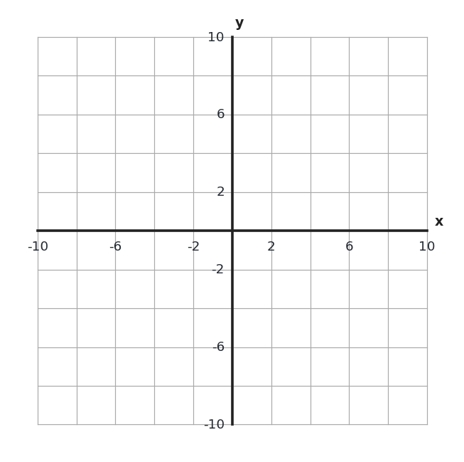
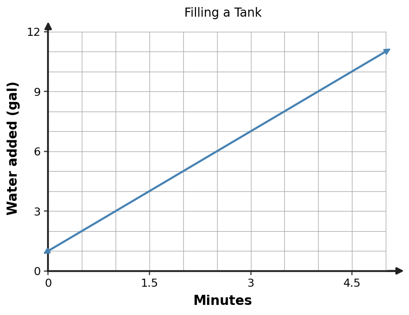

1. Plot and label \(A(-4,3)\) and \(B(2,-5)\) on the coordinate plane.

1. Plot and label \(A(-4,3)\) and \(B(2,-5)\) on the coordinate plane.

2. Evaluate \(2a-3b\) when \(a=-4\) and \(b=5\). Write the substituted expression before evaluating.
3. What should you do first in \(18-3(4+2)^2\)? Name the first operation, then evaluate the expression.
4. Complete the equivalent rewrite and then evaluate: \(-6-(-8)=-6\;\square\;8\).
5. For the ordered pair \((-4,9)\), what is the input and what is the output? State which coordinate comes first.
6. Use \(y=-3x+2\). Find the output when \(x=-2\). Show the substitution.
7. Jordan says “3 left, 5 up” from the origin ends at \((-3,5)\). Sam says it ends at \((3,-5)\). Who is correct? Explain using the signs of the coordinates.
8. A student evaluates \(4x+1\) by writing \(4(-3)+1\). What value was substituted for \(x\)? Explain how you know.
9. After simplifying the parentheses in \((8-3)^2+6\div2\), what expression remains? Then finish evaluating.
10. Which is greater: \(-3(4)\) or \(3(-5)\)? Evaluate both expressions and compare.
11. In \(C=5t+7\), identify the input variable and the output variable. Explain which variable depends on the other.
12. Use \(y=3x+1\) to complete the table row. Then write the result as an ordered pair.
| Input \(x\) | Output \(y\) |
|---|---|
| 5 | ? |
13. Three points are in Quadrant II and one is not: \((-4,2)\), \((-1,7)\), \((3,5)\), \((-6,1)\). Which point is the odd one out? Explain using the sign pattern for Quadrant II.
14. For \(3x+x^2\) when \(x=2\), a student writes \(3(2)+x^2\). Explain the substitution error, correct the setup, and find the value.
15. A student evaluates \(2(3+1)^2\) as \(8^2=64\). Explain the first error and give the correct value.
16. Before calculating, predict whether \((-4)(-6)+(-5)\) is positive or negative. Then evaluate it.
17. Use the graph. What is the input quantity? What is the output quantity? Explain how the axes show this.

18. For \(y=5x-2\) and \(x=3\), a student writes \(5+3-2=6\). Explain the error and find the correct output.